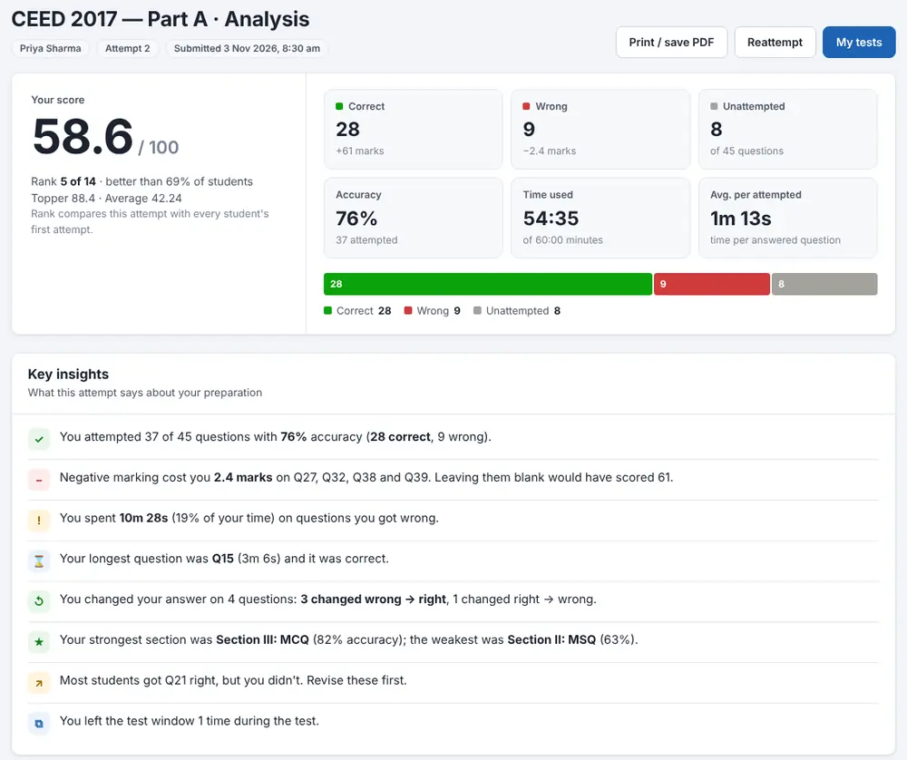
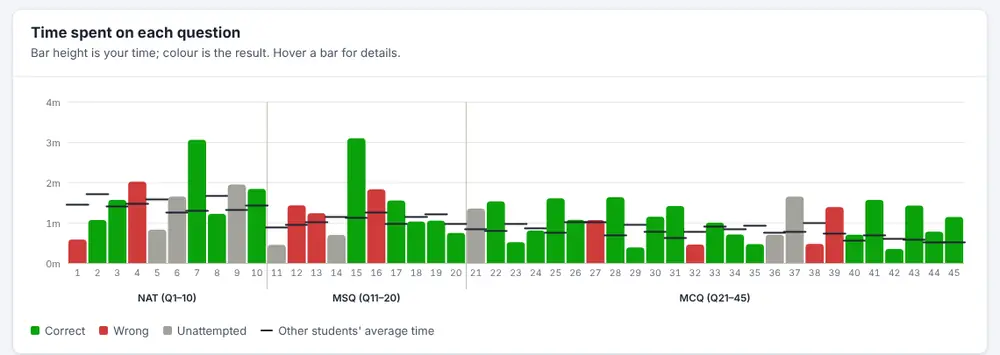

Original CEED and UCEED papers, question by question
Every question is shown exactly as it appeared in the official paper. Answers are checked automatically with each year's official answer key and marking scheme.
Your attempts on this device
Open the analysis of any attempt, or resume a test you didn't finish.
Three sections, one timer
CEED Part A lasts 60 minutes and UCEED Part A lasts 2 hours. Move freely between sections. Answers marked for review still count if you have answered them.
CEED for M.Des · 60 minutes · 150 marks
| Section | Question type | Questions | Correct | Wrong | Total |
|---|---|---|---|---|---|
| Section I | NAT · type the number on a keypad | 8 | +4 | 0 | 32 |
| Section II | MSQ · one or more options correct | 10 | +4 (+1 per correct option if no wrong one) | −1 | 40 |
| Section III | MCQ · only one option correct | 26 | +3 | −0.5 | 78 |
| Total | 44 | 150 |
UCEED for B.Des · 2 hours · 200 marks
| Section | Question type | Questions | Correct | Wrong | Total |
|---|---|---|---|---|---|
| Section 1 | NAT · type the number on a keypad | 14 | +4 | 0 | 56 |
| Section 2 | MSQ · one or more options correct | 15 | +4 (+1 per correct option if no wrong one) | −1 | 60 |
| Section 3 | MCQ · only one option correct | 28 | +3 | −0.71 | 84 |
| Total | 57 | 200 |
Older papers keep their own pattern: CEED 2020 to 2023 had 41 questions for 100 marks (NAT +3; MSQ +3, −0.2; MCQ +2, −0.5), CEED 2017 had 45 questions for 100 marks, and UCEED 2020 to 2023 had 68 questions for 240 marks in 2 hours 30 minutes (in UCEED 2020 to 2022, MSQ gave +4 or −0.19 with no partial marking). From 2015 to 2019 the whole UCEED exam was one computer-based paper of 300 marks in 3 hours (80 to 100 questions), so those mocks are the full paper. Every mock uses the marking scheme and time limit of its own year.
Practise the paper and the interface
On exam day the interface shouldn't surprise you. This one works the same way.
Real exam screen
Section tabs, countdown timer, question palette with all five status colours, Mark for Review and Save & Next.
NAT virtual keypad
Numerical answers are typed on the on-screen keypad, exactly like the exam.
No sign-up needed
Just enter your name and email. No password or OTP. Your attempts and results are saved on the server.
Autosave & resume
Every answer is saved as you go. If your internet or power goes off, open the test again and resume where you stopped.
Time on every question
See how long each question took you, compared with other students' average time.
Section & topic analysis
Score, accuracy and time per section, topic-wise accuracy, rank among students and a review of every question.
An analysis that shows how you used your time
Not just a score. See which question you were on at what time, where you lost marks and what to revise first.
- Correct, wrong and unattempted questions, accuracy and marks lost to negative marking
- Section-wise score, accuracy and how you split your time
- Exam timeline: which question was on screen at what time, and when each answer was saved
- Rank and percentile among everyone who attempted the paper
- Question review with the correct answer, your answer and time spent


Sample analysis from a practice attempt
Ready in under a minute
Enter your name & email
No password or OTP. Use the same email every time so your attempts stay together.
Read the instructions
The same two instruction pages and declaration as the real exam.
Attempt in the real time limit
60 minutes for CEED, 2 hours for UCEED. Answer, mark for review and move between sections. The test submits itself when time runs out.
Study your analysis
Review every question, your timeline and your rank, then reattempt when you're ready.
Questions students ask
Is it free?
Yes. Enter your name and email and attempt any available paper. There is no sign-up or password.
Do I need to install anything?
No. It runs in your browser. A laptop or desktop gives the closest experience to the exam hall, but it also works on phones.
What if my internet or power goes off during the test?
Your answers are saved to the server as you go. Open this site again on the same device and click Resume, or start the same paper with the same email on another device. The test continues where you stopped, and the timer pauses while you are away.
Can I attempt a paper again?
Yes. Each attempt gets its own analysis. Your rank always compares first attempts, so it stays fair.
Where can I see my results later?
Under My results on this page, on the device you used for the test. On a result page, click Copy result link and keep the link to open your analysis on any device.
Which papers are available?
Part A of CEED 2017 and CEED 2020 to 2026, Part A of UCEED 2020 to 2026, and the full UCEED 2015 to 2019 papers (the whole exam was computer-based in those years), each with its official answer key. Part B is a drawing test checked by examiners, so it is not included.
What is the difference between CEED and UCEED?
Both are design entrance exams conducted by IIT Bombay. CEED is for postgraduate admissions (M.Des and PhD) and UCEED is for undergraduate admissions (B.Des). Both have a computer-based Part A with NAT, MSQ and MCQ sections, and that is what you can practise here. UCEED Part A is longer (2 hours) and has more questions.
Some questions mention an animated GIF. What happens to them?
A few questions showed an animation in the real exam. Animations can't be played here, so when a question can't be answered from a still image, everyone gets full marks for it. The question still shows so you know what was asked.
Does clicking a question number save my answer?
No, just like the real exam. Use Save & Next or Mark for Review & Next to save an answer.
Take a CEED or UCEED mock now
20 papers · official answer keys · instant analysis